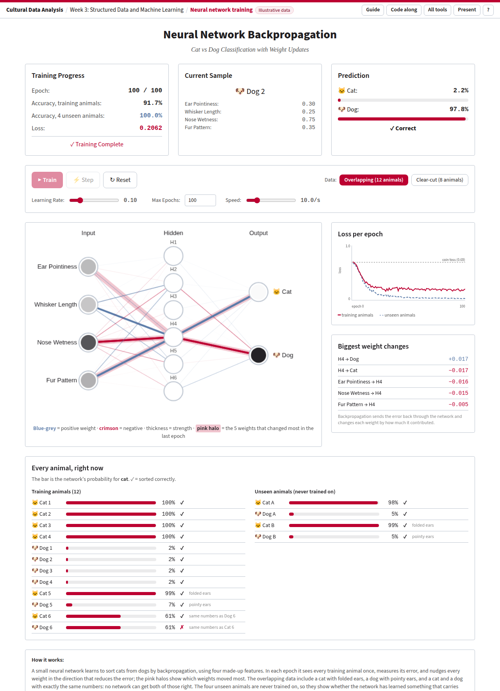

How a network learns to tell cats from dogs · Week 3: Structured Data and Machine Learning
A very small neural network learns to sort animals into cats and dogs. You can watch every weight change while it learns, see which weights the error pushes hardest, and test the result on animals it has never seen. The procedure is backpropagation, the same one used by the large models later in the course, at a size where every number is still visible.
Open the network Open with fixed starting weights (seed 1)

After 100 epochs on the overlapping data (seed 1): 11 of 12 training animals right, all 4 unseen animals right, and the loss levelling off at about 0.2.
| Part | What it shows |
|---|---|
| Training Progress | Epoch: how many times the network has seen all training animals. Accuracy, training animals: how many it now sorts correctly. Accuracy, 4 unseen animals: the same for four animals it never trains on. Loss: how wrong it is on average (see section 3). |
| Current Sample and Prediction | The last animal the network learned from in this epoch, its four feature values, and how sure the network now is that it is a cat or a dog. |
| Train / Pause, Step, Reset | Train runs epochs one after the other until Max Epochs (100). Step runs exactly one epoch. Reset draws new random weights. Enter, Space, R. |
| Data | Overlapping (12 animals), the default, or Clear-cut (8 animals). Switching resets the network. |
| Learning Rate, Max Epochs, Speed | How big each weight change is (0.01 to 0.5, default 0.10), when training stops, and epochs per second. |
| Network diagram | Four inputs, six hidden neurons (H1 to H6, top to bottom), two outputs. Every line is a weight: blue-grey positive, crimson negative; thicker means larger. A pink halo marks the five weights that changed most in the last epoch. The dark fill in each circle is the neuron's activation for the current sample. |
| Loss per epoch | The loss after every epoch: crimson for the training animals, dashed blue-grey for the unseen ones. The dotted line at 0.69 is the loss of guessing 50/50. |
| Biggest weight changes | The same five weights as the halos, with how much each moved in the last epoch, for example Ear Pointiness → H4 −0.016. |
| Every animal, right now | Each training and unseen animal with the network's probability for cat, and ✓ or ✗. |
Links that open in a given state: ?seed=1 (the same starting weights every time, for a class demonstration), ?data=clear, ?steps=20; combine them, for example ?seed=1&steps=10. Other keys: P presentation mode, ? help, G this guide.
Each animal is four made-up numbers between 0 and 1: ear pointiness, whisker length, nose wetness and fur pattern.
| Animals | Ears | Whiskers | Nose | Fur | In which set |
|---|---|---|---|---|---|
| Cat 1–4 | 0.80–0.95 | 0.75–0.90 | 0.20–0.30 | 0.65–0.80 | both |
| Dog 1–4 | 0.15–0.30 | 0.20–0.35 | 0.75–0.90 | 0.30–0.45 | both |
| Cat 5, folded ears | 0.25 | 0.80 | 0.35 | 0.70 | overlapping |
| Dog 5, pointy ears | 0.90 | 0.35 | 0.80 | 0.45 | overlapping |
| Cat 6 and Dog 6 | 0.55 | 0.50 | 0.55 | 0.50 | overlapping: exactly the same numbers |
| Cat A, Dog A | 0.80 / 0.30 | 0.70 / 0.30 | 0.35 / 0.70 | 0.60 / 0.40 | unseen, never trained on |
| Cat B (folded ears), Dog B (pointy ears) | 0.30 / 0.80 | 0.75 / 0.30 | 0.30 / 0.75 | 0.75 / 0.40 | unseen, never trained on |
This is a table of structured data, like the ones earlier in the lecture. The network never sees a picture: someone has already turned each animal into four numbers. Cat 6 and Dog 6 show what that costs. Whatever tells them apart is not in the four numbers, so no network can get both right.
The training animals are shuffled. For each one in turn:
The halos and the Biggest weight changes list add up these small updates over the whole epoch.
Open with seed 1 about 5 minutes. With seed 1 the numbers below are exactly what you will see.
With only the eight clear-cut animals, training accuracy reaches 100% within a few epochs and the loss goes almost to 0. The task looks solved, but the network has never met a cat with folded ears. Compare the unseen animals with those in the overlapping run.
Then run both datasets at three learning rates, pressing Reset in between. Typical results from 200 simulated runs of each, after 100 epochs:
| Data | Learning rate | Loss after 10 epochs | Loss after 100 | Training accuracy after 100 |
|---|---|---|---|---|
| Overlapping | 0.01 | 0.69 | 0.32 | 91.7% |
| Overlapping | 0.10 | 0.41 | 0.19 | 91.7% |
| Overlapping | 0.50 | 0.40 | 0.14 | 91.7% |
| Clear-cut | 0.01 | 0.68 | 0.24 | 100% |
| Clear-cut | 0.10 | 0.28 | 0.003 | 100% |
| Clear-cut | 0.50 | 0.01 | 0.000 | 100% |
A larger learning rate learns faster here. With 0.5 the loss curve on the overlapping data jitters, because each step overshoots a little. Ask the room why nobody sets the learning rate to 100.
Now and then (a few runs in two hundred) the hidden neurons all start at 0 for every animal and the network is stuck at 50%. Press Reset. It is a real problem in large networks too (“dead” neurons).
The data are illustrative: invented animals, four hand-picked features, and a test set of only four. Real image classifiers start from pixels, not features, have millions of weights, train on batches of thousands of examples, and are tested on thousands of held-out images. The mechanics of forward pass, loss, backward pass and update are exactly the same.
Used in the Week 3 lecture. Source: tools/neural-net.